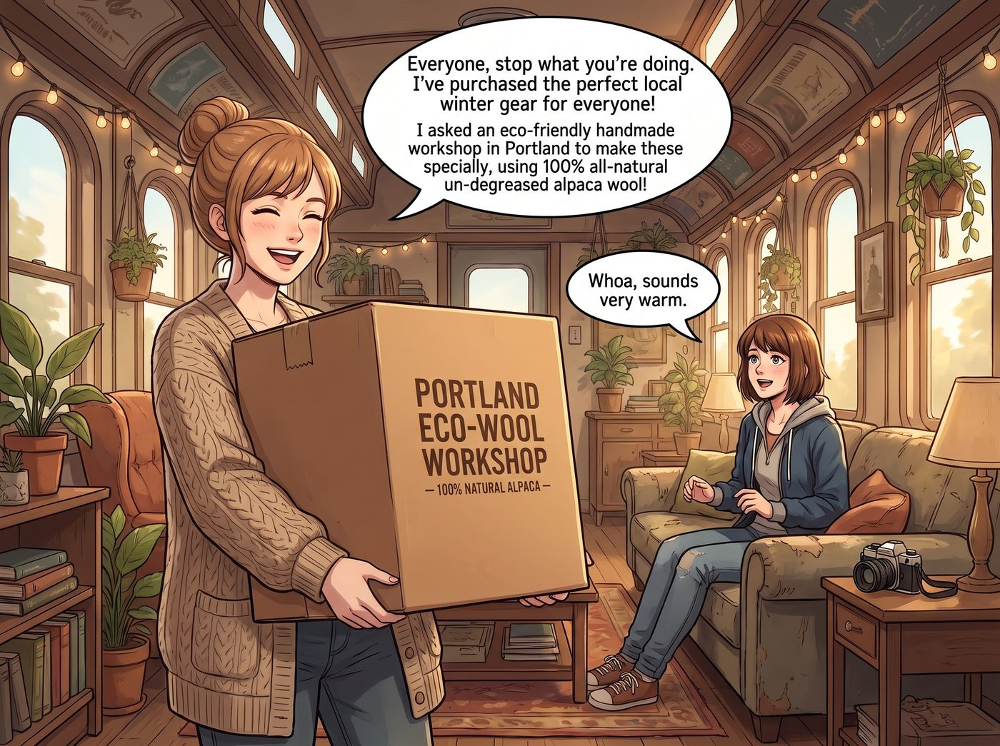
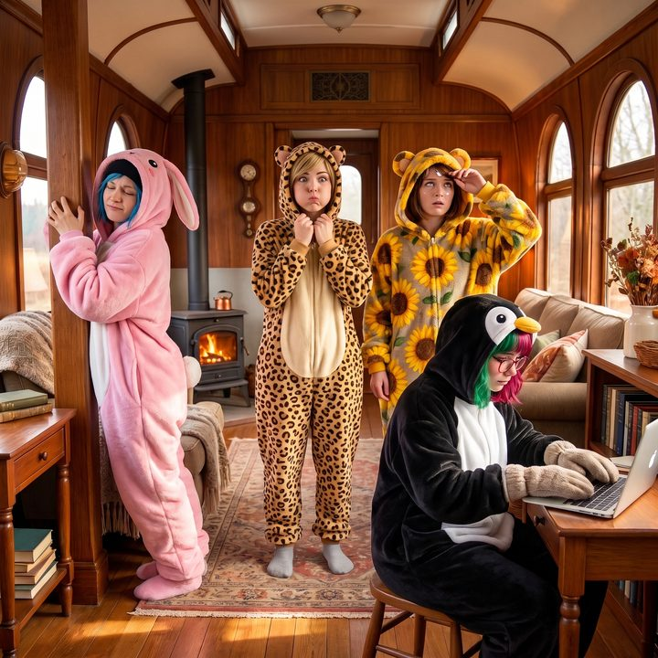

生氣臉


隨著十一月的寒風徹底席捲奧林匹亞半島，二號車廂雖然有核反應爐提供電力，但這節老舊的鐵皮車廂在夜裡依然會不可避免地漏風。
為了確保大家的健康，一向負責團隊後勤與心靈照護的 Kate，終於也動用了自己的網購權限。
一、實用裝備的降臨
這天下午，當四個傢伙正圍在工作台前，看著 Lily 演示如何合法做空一家伐木公司時，Kate 興沖沖地抱著一個巨大的環保紙箱走了過來。
「大家停一下手邊的工作哦。」Kate 臉上洋溢著無比燦爛的笑容，彷彿天使降臨帶來了福音，「我為大家採購了完美的在地過冬實用裝備！這可是我拜託波特蘭的一家環保手工坊，用百分之百純天然未脫脂的羊駝毛特製的！」
「哇哦，聽起來很溫暖。」Max 滿懷期待地放下了相機。
Victoria 也微微點頭：「純天然羊駝毛？如果處理得當，保暖性能確實可以媲美頂級羊絨。」
Kate 開心地打開紙箱，將裡面的實用裝備一件件拿了出來。
車廂裡的空氣，在這一瞬間，死寂得連核反應爐的底層運轉聲都聽得一清二楚。
那不是什麼精緻的毛衣，而是四件無比厚重、顏色極度飽和、且帶有巨大動物兜帽的全包覆式連體睡衣。
「Chloe，這是妳的！」Kate 舉起一件螢光粉色、兜帽上還縫著兩隻巨大垂耳兔耳朵的連體衣，「粉色兔子，代表著妳內心其實很柔軟呢！」
「Victoria，這是妳的！」一件土黃色、肚子上繡著一隻巨大金錢豹的連體衣被遞到了名媛面前。「Max，這是妳的向日葵小熊！」「Lily，這件水藍色的小企鵝一定很適合妳！」
二、集體的恐懼
四個在資本市場、聯邦網路和街頭火拼中叱吒風雲的怪物，看著眼前這堆宛如幼稚園中班文藝匯演服裝的羊駝毛連體衣，集體陷入了深深的恐懼。
「Kate……」Chloe 的嘴角瘋狂抽搐，指著那件粉色兔子連體衣，「這玩意兒的顏色亮得連衛星都能直接鎖定我！而且它居然還有一個毛茸茸的短尾巴？！」
Victoria 則是用兩根手指捏起那件土黃色的金錢豹連體衣，彷彿捏著一塊帶有輻射的核廢料。「未脫脂羊駝毛？Kate，這件衣服散發著一種剛從農場泥地裡滾出來的原始動物氣味！如果我把它穿在身上，我的克什米爾羊絨大衣會集體在衣櫃裡上吊自殺的！」
就連一向乖巧的實習生 Lily，此刻也推了推圓框眼鏡，如臨大敵地退後了半步。「Kate 學姐，從物理安全的角度來看，這種長纖維動物毛髮在乾燥的車廂環境中，會產生高達數萬伏特的靜電。如果我穿著它觸碰伺服器機櫃，二號車廂將有百分之八十五的機率發生數據庫物理性損毀。」
Max 抱著那件向日葵小熊連體衣，只覺得它重得像一件防彈背心，而且光是拿在手裡，就已經讓人覺得渾身發癢了。
三、生氣臉的威懾
「所以……」Kate 原本高高舉著衣服的手，慢慢地放了下來。
她低下頭，劉海遮住了眼睛。當她再次抬起頭時，平日裡那個總是溫柔微笑、充滿聖光的大天使不見了。取而代之的，是 Kate 緊緊抿著嘴唇，雙頰微微鼓起，眉毛用力地向下壓著的——生氣臉。
那是一種極度少見的、帶著三分委屈和七分倔強的表情。
「大家……是覺得我挑選的禮物很丟臉嗎？」Kate 雙手叉腰，眼眶竟然有些微微發紅，聲音也不再溫柔，而是帶著一絲顫抖的指責，「外面那麼冷，我只是想讓大家像一家人一樣，穿著暖和的衣服坐在一起喝熱可可……結果妳們一個嫌棄顏色，一個嫌棄味道，還有一個居然說會毀了電腦……」
警報。最高級別的道德警報在二號車廂內瘋狂拉響。
在這個團隊裡，妳可以和 Chloe 互毆，可以和 Victoria 炫富，甚至可以和 Lily 玩駭客攻防。但有一條絕對的鐵律是所有人都刻在DNA裡的：絕對、絕對不可以讓 Kate Marsh 傷心。
誰讓小天使委屈，誰就是全宇宙最大的罪人。
四、諂媚的滑跪
「不不不！！Kate！我們愛死這件衣服了！」Chloe 第一個滑跪。街頭霸王以一種肉眼無法捕捉的速度，直接把那件帶有短尾巴的螢光粉色兔子連體衣套在了自己的皮夾克外面，拉鍊一把拉到頂。「妳看！太保暖了！我現在感覺自己就像一隻能在雪地裡單挑灰熊的戰鬥兔！一點都不刺人！哈哈……哈……」
Victoria 咬著牙，一邊在心裡懺悔，一邊閉著眼睛將那件散發著羊駝原味的土黃色金錢豹睡衣穿上。「沒……沒錯。這是一種非常前衛的原生態解構主義時尚。巴黎時裝週明年一定會流行這個的。我……我非常喜歡。」名媛笑得比在董事會上被逼宮還要難看。
Max 滿頭大汗地套上了向日葵小熊，熱得幾乎快要中暑了，還要努力豎起大拇指：「真的很暖和，Kate，我都出汗了，這絕對是極品禦寒裝備。」
而實習生 Lily 則默默地走到工作台前，給自己戴上了一副絕緣防靜電橡膠手套，然後乖巧地穿上了那件水藍色的小企鵝連體衣。「只要做好絕緣措施，這套服裝的熱力學效能確實達到了S級。感謝 Kate 學姐的後勤補給。」
四個穿著荒謬動物連體衣的傢伙，像四根五顏六色的冰棒一樣僵硬地站在車廂中央。羊駝毛扎在皮膚上帶來了陣陣刺癢，厚重的布料讓她們熱得滿頭大汗，但為了安撫 Kate，四個人全都硬擠出了這輩子最難看、最諂媚的笑容。
五、破功的演技
看著眼前這幅荒謬到極點的畫面——粉紅兔子 Chloe 正在偷偷撓背，金錢豹 Victoria 一臉生無可戀地屏住呼吸，向日葵小熊 Max 熱得翻白眼，而企鵝 Lily 正戴著絕緣手套敲鍵盤。
Kate 站在她們面前，雙手依然叉著腰，努力維持著那張生氣臉。
一秒。兩秒。三秒。
突然，「噗嗤」一聲。Kate 緊緊抿著的嘴唇破功了。
她猛地轉過身，肩膀開始劇烈地聳動。「哈哈哈哈……不行了……對不起……」
Kate 終於忍不住了，她轉過身，笑得彎下了腰，甚至眼淚都笑了出來。她指著 Chloe 兜帽上那兩隻耷拉下來的粉色兔耳朵，笑得連話都說不完整了。
「Kate？」四個人面面相覷。
「對不起大家……哈哈哈哈……」Kate 擦著眼角的笑淚，那張聖潔的臉上此刻竟然寫滿了惡作劇得逞的狡黠，「其實……這幾件衣服是我在二手市場用五美金打包買回來的萬聖節瑕疵庫存。我知道它們又重、又難看、還會掉毛……」
「什麼？！」Chloe 震驚地看著身上的粉色兔子，「那妳剛才的眼淚……」
「因為如果我不裝作很生氣、很委屈的樣子，妳們這群固執的傢伙絕對不會乖乖穿上它們的呀！」Kate 笑得臉頰紅撲撲的，她不知從哪裡拿出了 Max 的寶麗來相機，對著這四個被她精湛演技徹底騙過去的賽博廢土精英按下了快門。
「咔嚓！」一張四個怪物穿著滑稽動物連體衣、滿臉錯愕與崩潰的照片，被永恆地定格了下來。
「這可是二號車廂最珍貴的家庭限定版全家福呢。」Kate 滿意地甩著底片，溫柔地朝她們眨了眨眼睛，「現在，大家可以把這身可怕的衣服脫掉了。我給大家準備了真正暖和的熱紅酒哦。」
四個人如蒙大赦般地瘋狂脫著連體衣。Max 看著那個笑得一臉純潔的大天使，忍不住在心裡默默地重新評估了車廂的戰力排行榜。
在二號車廂裡，資本可以被駭客打敗，駭客可以被物理破壞打敗。但在最高維度的道德與演技領域，Kate Marsh，才是這個生態鏈頂端真正的、絕對的統治者。